Bebidas black myth Wukong
Em Black myth Wukong as bebidas adicionam diferentes efeitos à sua Cabana, desde restaurar sua saúde rapidamente, restaurá-la ao longo do tempo, conceder mais Qi ou Mana, etc.
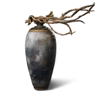
Vinho de Coco de 3 Anos
Raridade: Incomum
Efeito: Cada gole recupera 36% da saúde máxima.
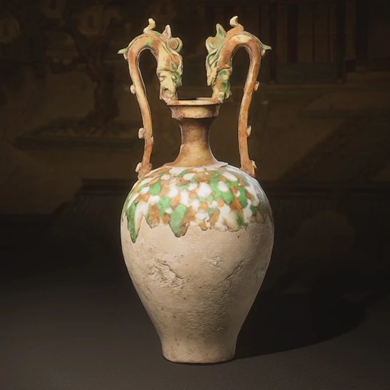
Vinho de Coco de 5 Anos
Raridade: Cru
Efeito: Cada gole recupera 40% da saúde máxima.
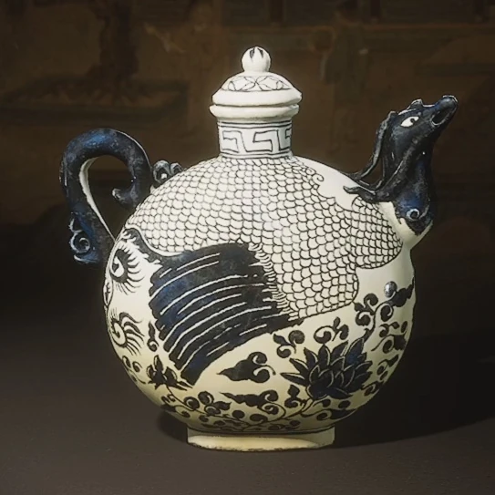
Vinho de Coco de 10 Anos
Raridade: Épico
Efeito: Cada gole recupera 43% da saúde máxima.
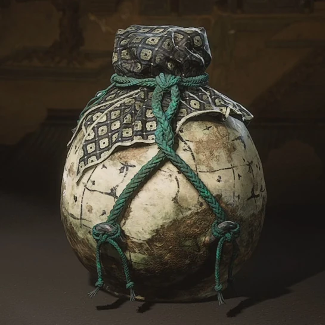
Vinho de Coco de 18 Anos
Raridade: Épico
Efeito: Cada gole recupera 46% da saúde máxima.
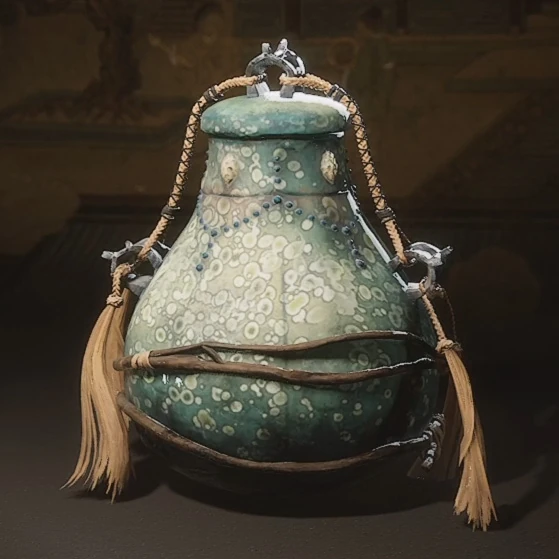
Vinho de Coco de 30 Anos
Raridade: Lendário
Efeito: Cada gole recupera 49% da saúde máxima.
Mil Dias de Embriaguez
Raridade: Mítico
Efeito: Recupera 60% da saúde, mas causa embriaguez temporária.

Romance de Bluebridge
Raridade: Lendário
Efeito: Recupera 36% da saúde e aumenta a velocidade.
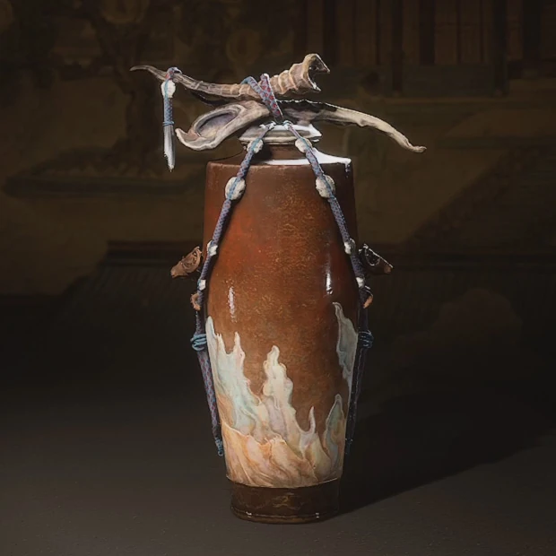
Vinho de Coco
Raridade: Comum
Efeito: Recupera 33% da saúde. Pode ser aprimorado.
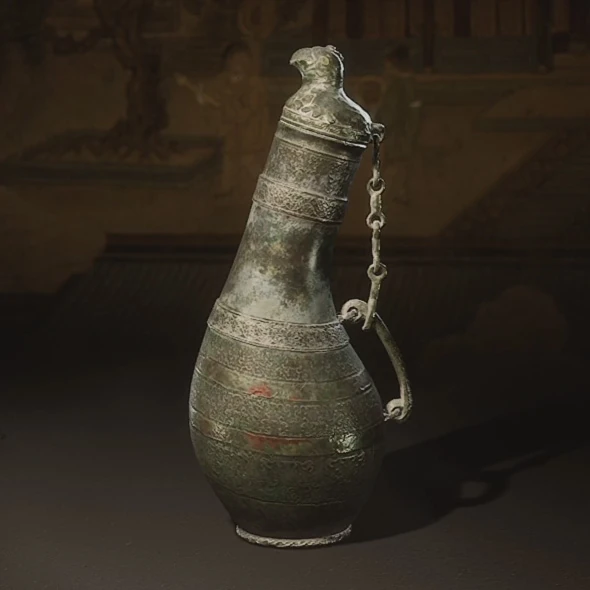
Álcool Seco
Raridade: Lendário
Efeito: Recupera 18% instantâneo + 48% ao longo do tempo.
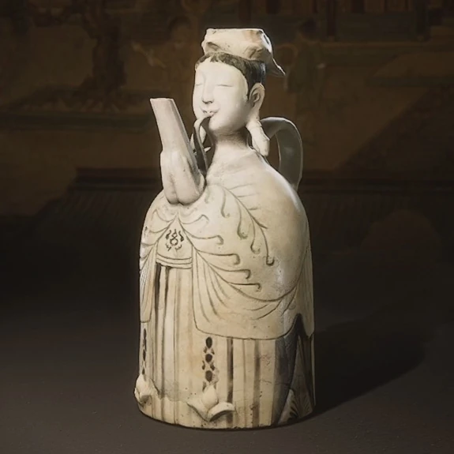
Orvalho de Jade
Raridade: Mítico
Efeito: Recupera 55% da saúde máxima.

Essência de Jade
Raridade: Lendário
Efeito: Recupera 36% da saúde e Mana moderada.
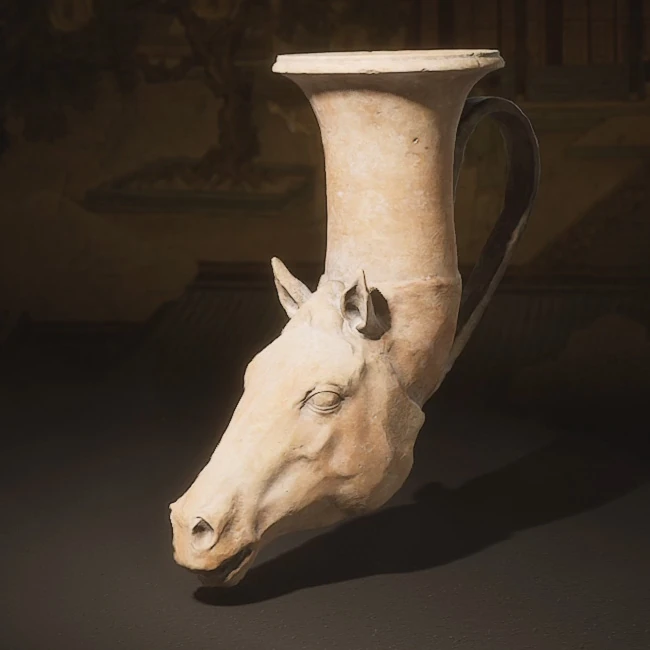
Cerveja de Cordeiro
Raridade: Cru
Efeito: Recupera 20% imediato + 25% lento.

Bálsamo Loong
Raridade: Mítico
Efeito: Recupera 30% e aumenta muito o dano do próximo ataque.
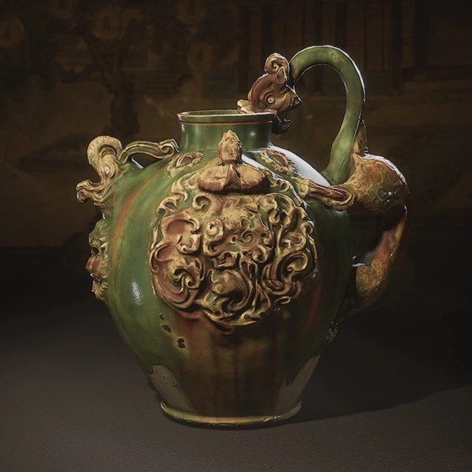
Cerveja do Macaco
Raridade: Mítico
Efeito: Recupera 50% da saúde.
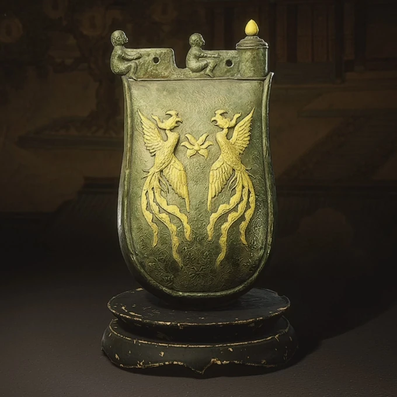
Cerveja de Pinho
Raridade: Épico
Efeito: Recupera 35% da saúde e concede foco extra se estiver abaixo da metade.
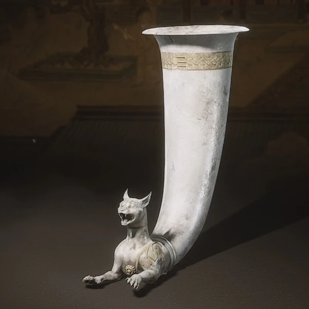
Pôr do Sol dos Nove Céus
Raridade: Lendário
Efeito: Recupera 35% da saúde + grande quantidade de Qi.
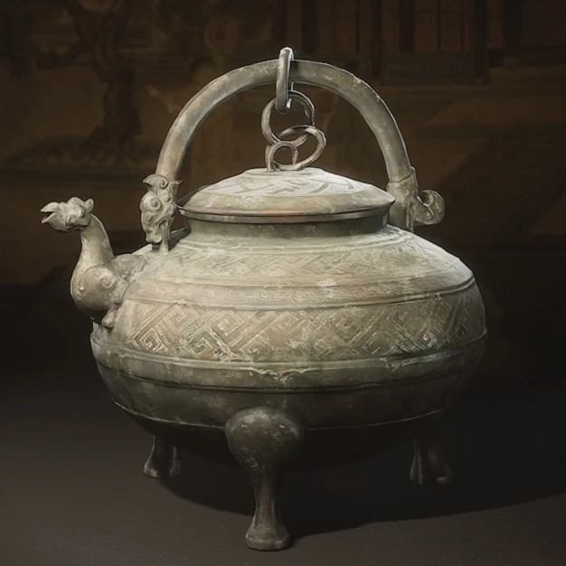
Cerveja Sem Preocupações
Raridade: Lendário
Efeito: Recupera 24% e, quando a saúde está crítica, recupera drasticamente mais.
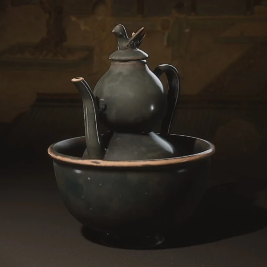
SOUR WINE
Raridade: Lendário
Efeito: Cada gole recupera 24% da saúde; por um breve momento, aumenta o custo de Estamina, mas melhora o dano de ataques Pesados carregados e Combos Variados.